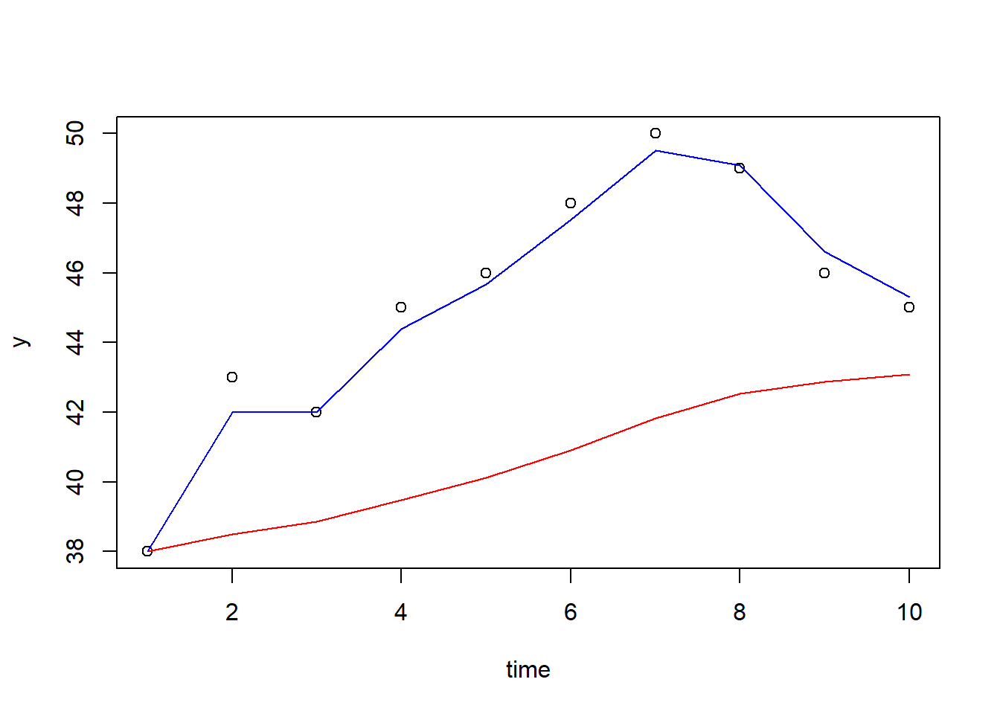
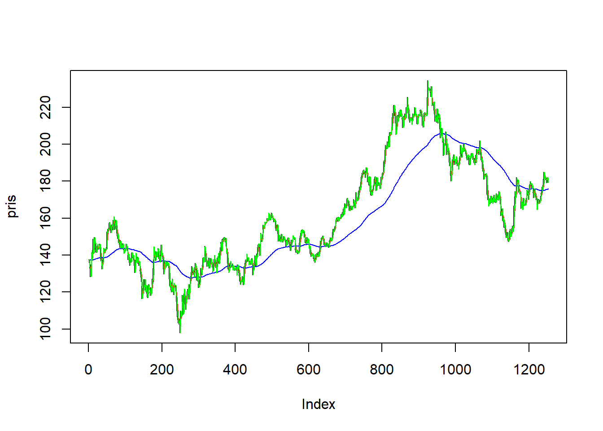

5.1 Introduksjon til tidsrekker
5.1.1 Kontrollspørsmål
- Hvilke forskjeller er det mellom en tidsrekke og et sett med samtidige observasjoner?
- Nevn noen typiske mønstre som vi kan se etter i en tidsrekke.
- Hvorfor er det nyttig å identifisere slike mønstre?
- Hvorfor kan det være nyttig å glatte en tidsrekke?
- Beskriv kort hvordan man regner ut et glidende gjennomsnitt.
- Hvorfor kan vi ikke bruke det glidende gjennomsnittet til å predikere neste observasjon i en tidsrekke?
- Beskriv kort hvordan eksponensiell glatting fungerer, og hvorfor denne teknikken kan brukes til prediksjon.
5.1.2 Oppgaver fra lærebok
Keller: Statistics for Management and Economics, 11. utg
a) Regn ut et glidende gjennomsnitt med vindusstørrelse 3 for følgende tidsrekke:

Løsning
| t | Glidende gjennomsnitt |
|---|---|
| 1 | NA |
| 2 | (48+41+37)/3 = 42.00 |
| 3 | (41+37+32)/3 = 36.67 |
| 4 | (37+32+36)/3 = 35.00 |
| 5 | (32+36+31)/3 = 33.00 |
| 6 | (36+31+43)/3 = 36.67 |
| 7 | (31+43+52)/3 = 42.00 |
| 8 | (43+52+60)/3 = 51.67 |
| 9 | (52+60+48)/3 = 53.33 |
| 10 | (60+48+41)/3 = 49.67 |
| 11 | (48+41+30)/3 = 39.67 |
| 12 | NA |
b) Regn ut et glidende gjennomsnitt med vindusstørrelse 5 for tidsrekken over.
Løsning
| t | Glidende gjennomsnitt |
|---|---|
| 1 | NA |
| 2 | NA |
| 3 | (48 +41+37+32+36)/5 = 38.8 |
| 4 | (41+37+32+36+31)/5 = 35.4 |
| 5 | (37+32+36+31+43)/5 = 35.8 |
| 6 | (32+36+31+43+52)/5 = 38.8 |
| 7 | (36+31+43+52+60)/5 = 44.4 |
| 8 | (31+43+52+60+48)/5 = 46.8 |
| 9 | (43+52+60+48+41)/5 = 48.8 |
| 10 | (52+60+48+41+30)/5 = 46.2 |
| 11 | NA |
| 12 | NA |
c) Tegn inn tidsrekken over med de to glattingene inn i samme figur.
Løsning
“Manuelt” i R:
# Les først inn dine utregninger
time <- seq(12)
y <- c(48, 41, 37, 32, 36, 31, 43, 52, 60, 48, 41, 30)
glatt3 <- c(NA, 42, 36.67, 35, 33, 36.67, 42, 51.67, 53.33, 49.67, 39.67, NA)
glatt5 <- c(NA, NA, 38.8, 35.4, 35.8, 38.8, 44.4, 46.8, 48.8, 46.2, NA, NA)
# Med base-R plot
plot(time, y)
lines(time, glatt3, col = "red")
lines(time, glatt5, col = "blue")
# eller med ggplot
library(ggplot2)df <- data.frame(time = rep(time, 2),
y = rep(y, 2),
glatting = c(glatt3, glatt5),
vindulengde = factor(c(rep("3", 12), rep("5", 12))))
ggplot(df) +
geom_point(aes(x = time , y = y)) +
geom_line(aes(x = time, y = glatting, color = vindulengde))d) Regn ut eksponensiell glatting for tidsrekken under med glattefaktor \(w = 0.1\):

Løsning
| t | Eksponensiell glatting |
|---|---|
| 1 | 38.00 |
| 2 | 0.1(43) + 0.9(38) = 38.50 |
| 3 | 0.1(42) + 0.9(38.50) = 38.85 |
| 4 | 0.1(45) + 0.9(38.85) = 39.47 |
| 5 | 0.1(46) + 0.9(39.47) = 40.12 |
| 6 | 0.1(48) + 0.9(40.12) = 40.91 |
| 7 | 0.1(50) + 0.9(40.91) = 41.82 |
| 8 | 0.1(49) + 0.9(41.82) = 42.53 |
| 9 | 0.1(46) + 0.9(42.53) = 42.88 |
| 10 | 0.1(45) + 0.9(42.88) = 43.09 |
e) Gjenta oppgaven over med glattefaktor \(w = 0.8\).
Løsning
| t | Glidende gjennomsnitt |
|---|---|
| 1 | 38 |
| 2 | 0.8(43) + 0.2(38) = 42.00 |
| 3 | 0.8(42) + 0.2(42.00) = 42.00 |
| 4 | 0.8(45) + 0.2(42.00) = 44.40 |
| 5 | 0.8(46) + 0.2(44.40) = 45.68 |
| 6 | 0.8(48) + 0.2(45.68) = 47.54 |
| 7 | 0.8(50) + 0.2(47.54) = 49.51 |
| 8 | 0.8(49) + 0.2(49.51) = 49.10 |
| 9 | 0.8(46) + 0.2(49.10) = 46.62 |
| 10 | 0.8(45) + 0.2(46.62) = 45.32 |
f) Tegn tidsrekken over inn i samme figur som de to glattede versjonene. Ser det ut til å være en trend i denne tidsrekken?
Løsning
“Manuelt” i R:
# Les først inn dine utregninger
time <- seq(10)
y <- c(38, 43, 42, 45, 46, 48, 50, 49, 46, 45)
exp01 <- c(38, 38.50, 38.85, 39.47, 40.12, 40.91, 41.82, 42.53, 42.88, 43.09)
exp08 <- c(38, 42, 42, 44.40, 45.68, 47.54, 49.51, 49.10, 46.62, 45.32)
# Med base-R plot
plot(time, y)
lines(time, exp01, col = "red")
lines(time, exp08, col = "blue")
# eller med ggplot
library(ggplot2)
df <- data.frame(time = rep(time, 2),
y = rep(y, 2),
glatting = c(exp01, exp08),
glattefaktor = factor(c(rep("0.1", 10), rep("0.9", 10))))
ggplot(df) +
geom_point(aes(x = time , y = y)) +
geom_line(aes(x = time, y = glatting, color = glattefaktor))Det ser ut til at det er en stigende trend som avtar mot de siste observasjonene i tidsrekken.
bonusspørsmål) Hva blir prediksjonen av \(Y_{11}\) når du bruker modellen i henholdsvis oppgave d) og e)?
Løsning
Våre prediksjoner av \(Y_{11}\) blir da henholdsvis \(43.09\) og \(45.32\).
5.1.3 R-øving
Vi har lastet ned den daglige prisen på Eqinoraksjen over en 5-års periode fra Oslo Børs’ hjemmeside. Vi laster inn datasettet som før ved hjelp av readxl-pakken, og henter ut den aktuelle kolonnen. Legg merke til at vi bruker rev()-funksjonen til å reversere rekkefølgen til observasjonene slik at den første verdien kommer først:
library(readxl)
equinor <- read_excel("equinor.xlsx")
pris <- rev(equinor$Siste) Du kan så lage et raskt plott av tidsrekken:
plot(pris, type = "l")Både glidende gjennomsnitt og eksponensiell glatting har flere ulike implementeringer i R. For glidende gjennomsnitt skal vi bruke funksjonen rollmean() i pakken zoo. Du må først installere pakken og laste den inn;
install.packages("zoo")
library(zoo)Hvis du leser litt på dokumentasjonen til rollmean() ved å kjøre ?rollmean vil du se at du kan regne ut f.eks et glidende gjennomsnitt for Equinoraksjen med vindusstørrelse 5 ved å kjøre
pris_glatt5 <- rollmean(pris, k = 5, fill = NA)Da får vi ut en ny vektor med lik lengde som den vi hadde, og som inneholder den glattede versjonen. Den fyller opp verdiene i starten og slutten som vi ikke kan regne ut med et glidende gjennomsnitt med NA, slik at vi kan tegne inn den glattede versjonen i samme plott som vi viste selve tidsrekken:
lines(pris_glatt5, col = "red")Dersom du er interessert kan du lese mer her om hvordan det glidende gjennomsnittet blir brukt som en investeringsstrategi.
Tanken er at det glidende gjennomsnittet representerer den langsiktige trenden. Dersom tidrekken ligger under det glidende gjennomsnittet tolkes det som at aksjen er på vei nedover, og motsatt: dersom prisen ligger over det glidende gjennomsnittet, så er det et tegn på at aksjen er på vei oppover. Når de to seriene krysser hverandre går “alarmen”, og man tar stilling til om man skal kjøpe eller selge.
Vindusstørrelsen velger man ut fra hvor hyppig man handler. For profesjonelle investorer som driver med handel i høy hastighet kan kanskje 5-dagersviduet som vi regnet ut over være nok. Andre med mellomlang og lang sikt vil gjerne bruke et vindu på 50 eller 200 dager.
Oppgave: Regn ut et glidende gjennomsnitt med vindusstørrelse 200 for Equinoraksjen, og tegn det inn i figuren du har laget. Hjelper denne figuren deg til å lage en investeringsstrategi?
Løsning
Forutsatt at du har gjort det over kan du skrive
pris_glatt200 <- rollmean(pris, k = 200, fill = NA)
plot(pris, type = "l")
lines(pris_glatt200, col = "red")
Nå kan vi jo ikke se det glidende gjennomsnittet for de siste observasjonene, så ved bare å sammenligne de siste observasjonene hvor vi også har det glidende gjennomsnittet så ligger prisen under det glidende gjennomsnittet, altså bør vi ikke investere (evt. selge, shorte etc.).
Et problem med analysen over er at vi trenger fremtidige observasjoner til å regne ut den glattede tidsrekken. Det betyr at vi kjenner den glattede versjonen av tidsrekken ved tid \(t\) først ved tid \(t+200\). Vi kan enkelt lage en annen variant der vi glatter tidsrekken ved tid \(t\) ved å ta gjennomsnittet av \(Y_{t-200}, Y_{t-199}, \ldots, Y_{t-1}\) i stedet for \(Y_{t-100}, \ldots, Y_{t}, \ldots, Y_{t+100}\), altså at vi bare bruker fortiden. Det gjør du i R ved å legge til det ekstra argumentet align = "right" i funksjonen rollmean. Fordelen nå er at vi ved hvert tidspunkt kjenner både prisen på aksjen og den glattede varianten.
Oppgave: Regn ut et glidende gjennomsnitt med vindusstørrelse 200 for Equinoraksjen som hele tiden bruker tidligere observasjoner i glattingen. Tegn glattingen inn i figuren. Hvordan ser investeringsstrategien din ut nå?
Løsning
pris_glatt200 <- rollmean(pris, k = 200, fill = NA, align = "right")
plot(pris, type = "l")
lines(pris_glatt200, col = "red")
I denne figuren ligger de siste prisene over det glidende gjennomsnittet noe som er indikasjon på en stigende trend. Altså kan en strategi være å investere i aksjen.
Eksponensiell glatting har også et annet navn: Holt Winters Metode. En funksjon for å gjennomføre den finnes innebygget i R, og heter HoltWinters(). I denne funksjonen er vektparameteren \(w\) representert ved argumentet alpha. Funksjonen har noen flere argumenter som ikke vi skal bruke, så dersom vi ønsker å regne ut den eksponensielle glattingen for Equinoraksjen med \(w = 0.5\), kjører vi:
pris_exp1 <- HoltWinters(pris, alpha = .5, beta = FALSE, gamma = FALSE)For å hente ut den glattede versjonen skriver vi
pris_exp1$fitted[,"xhat"]Oppgave: Lag en ny figur der du tegner inn aksjeprisen, samt den eksponensielle glattingen med hhv. \(w = 0.5\), \(w = 0.01\) og \(w = 0.99\).
Løsning
pris_exp1 <- HoltWinters(pris, alpha = .5, beta = FALSE, gamma = FALSE)
pris_exp2 <- HoltWinters(pris, alpha = .01, beta = FALSE, gamma = FALSE)
pris_exp3 <- HoltWinters(pris, alpha = .99, beta = FALSE, gamma = FALSE)
plot(pris, type = "l")
lines(pris_exp1$fitted[,"xhat"], col = "red")
lines(pris_exp2$fitted[,"xhat"], col = "blue")
lines(pris_exp3$fitted[,"xhat"], col = "green")